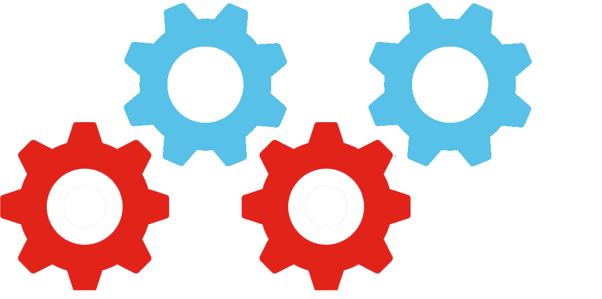
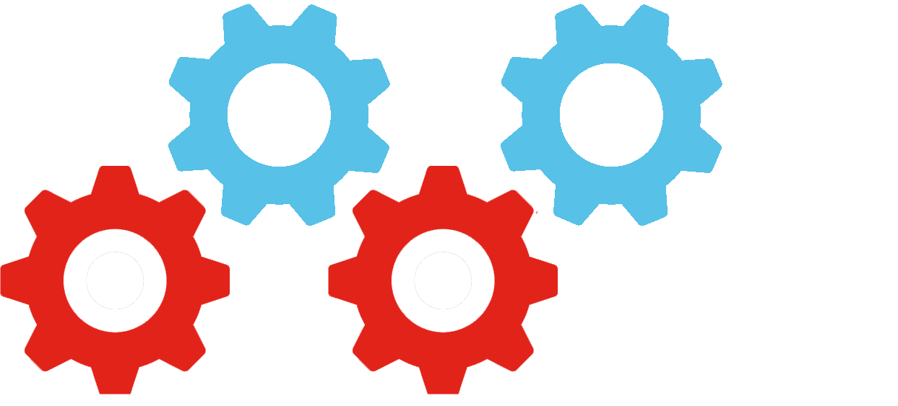

Sauce Labs 101
Created by James Tacker
Using Reveal.js
Trainer Intro
James Tacker
Technical Trainer
M.A. Multimedia
Previous (and current) Work:

Agenda

Introduction to Sauce Labs
Module Objectives
This module enables you to:
- Learn how Sauce Labs fits into the CI/CD Life Cycle
- Use the Sauce Labs UI
What is Sauce Labs?
Testing infrastructure in the cloud for web and mobile web applications.
Sauce Labs History
Founded in 2008, by Steven Hazel, John Dunham, and Jason Huggins (Co-creator of Selenium).
"Our purpose is to revolutionize testing
so that development teams
are free to innovate and deliver
amazing applications—faster."
CD/CI Cycle - Where Sauce Labs fits in

Appium, Selenium, and Sauce Labs
Sauce's browser (Selenium) and mobile (Appium) automation frameworks send commands to specific application elements.
- Selenium (mouse click, text field entry)
- Appium (mobile tap and swipe)
Using Sauce Labs
- Selenium
- Appium
- Parallelization
- Automation
- Security
- Reporting
- Seamless Integration
- Support
Lab: Set up a Sauce Labs Account
Tour the Sauce Labs interface and set up a Sauce Labs account
Documentation
-
Let's take a tour of the Docs!
- Sauce Labs Documentation
- Automated Website Testing with Sauce Labs
- Selenium Documentation
- Appium Documentation
Sauce Labs Tests
Module Objectives
This module enables you to:
- Conduct a Sauce labs test (locally or remotely)
- Identify the general components of Selenium and Appium test scripts
- Setup Sauce Connect
Configuring the Test Environment
Selenium
Appium
Local vs Remote Tests
- Can only test on local OS and browser
- Record & monitor your tests
- Selenium Grid & Appium Instance
- Parallelization
Testing Frameworks
A test automation framework is a scaffold comprised of libraries, dependecies, drivers, and helper scripts that facilitate the execution of test scripts.
Run Tests in Parallel
Testing Scripts on Sauce Labs
Requirements:
Sauce Labs Identification
The script uses the Sauce Labs API to autheticate user and record results against that user's profile
export SAUCE_USERNAME=dragoon013
export SAUCE_ACCESS_KEY=b89b7205-3aca-4af2-a618-9bab4c7bdebd
public static final String USERNAME = "dragoon013";
public static final String ACCESS_KEY = "b89b7205-3aca-4af2-a618-9bab4c7bdebd";
Sauce Labs REST APIs
REST API can automate GET, PUT, and POST Requests
- Choose API Client
- Authenticate
- Create a Unit Test
Quick Start
Sauce Connect
Tunneling app that establishes a secure connection between local machine and Sauce Lab VM.
- Alternative to whitelisting IPs
- Stablizes network connection
- Sauce Connect Documentation
Sauce Connect Best Practices
Use Sauce Connect in situations where your website/application isn't publicly accessible.
- Download client
- Install Sauce Connect Add-On (Firefox only)
- Launch a Tunnel
Installing Sauce Connector
- Download add-on from Firefox marketplace.
- Follow installation wizard instructions
- or Download client in Sauce Labs interface.

Configure the Add-on
- In Firefox, Tools> Add-Ons > Extensions
- Choose "Preferences"
- Enter Sauce login credentials when prompted
- Set the id of in "Tunnel" tab

Launch a Sauce Connect Tunnel
Choose Tools > Web Developer > Launch SC

View Tunnel in Sauce Labs
- Choose the "Tunnels" tab to view "Active Tunnels"
- Display is list format with Session ID and Host

Lab: Run a Sauce Labs Test
Run a python Test
Test Reporting
Module Objectives
This module enables you to:
- Update Sauce Job status reports
- View/manage archived test and build data
- Build links to test results
Managing Test Results
There are three ways to set "Passed/Failed" test conditions in Sauce Labs
- Use the REST API update_job method
curl -X PUT \ -s -d '{"passed": true}' \ -u YOUR_USERNAME:YOUR_ACCESS_KEY \ https://saucelabs.com/rest/v1/YOUR_USERNAME/jobs/YOUR_JOB_ID - Configure reporting conditions in the test scripts.
- Configure the Testing Framework to report the test data
Reading Results
After a test completes, you can view the Test results at saucelabs.com/beta/dashboard/tests
- Choose either Automated/Manual Tests
- Select the Test you want to view
Sharing Results
The Test Details page in the Sauce Labs Dashboard has options to share a "Test Link" with other team members
Manually Creating Test Links
There are three types of links you can create:
- Links to Jobs that Require a Login
- Links to Jobs that Don't require a Login
- Temporary Links to Jobs
Links That Require Login
To access a specific job locally:
- Write ID to log file
- Create a URL with following format
http://saucelabs.com/jobs/YOUR_JOB_IDLinks That Don't Require Login
Use authentication tokens, to prevent login requirements. Auth tokens are generated on a job basis.
For more details on this approach, and also temporary links, refer to the Documentation.
Lab: Configure Test Conditions
For this lab we will run another Python test, except we will cause it to fail and compare the results
Lab: Share Results
For this lab we will use the session ID to manually create a Test link that requires a login
Troubleshooting
Best Practices
Module Objectives
This module enables you to:
- Understand the use of Testing Frameworks
- Understand the difference between and assert and a verification
- Use a framework to record test results in Sauce Labs
Popular Frameworks
Java:
Ruby:
Python:
Test Driven Development vs. Behavior Driven Development
TDD is where a developer writes test, and then writes code, and tests that code continuously, until the test passes.
BDD is also a way to plan and develop code in a similar manner, but it allows teams to write scenarios and features without necessarily having technical knowledge.
TDD Planning Example
Sauce_counter() needs to count the number of sauces inputted
Pasta_counter() needs to count the number of pastas inputted
sNpComparer() needs to compare the counts and make sure that they are equal
BDD Planning Example
Feature: Pasta and Sauce Matchmaker
Scenario: some sauces
Given I have 5 different kinds of Sauce
When I have 5 different kinds of Pasta
Then my chef will be happy
BDD Framework Example
@Given("^I have (\\d+) sauces for my pasta")
public void the_number_of_sauces(Int arg1) throws Throwable {
// Write code here that turns the phrase above into concrete actions
throw new PendingException();
}
@When("^I have (\\d+) kinds of pasta")
public void the_number_of_pastas(Int arg1) throws Throwable {
// Write code here that turns the phrase above into concrete actions
throw new PendingException();
}
@Then("^My chef will be (.*)$")
public void the_feeling_is(String arg1) throws Throwable {
// Write code here that turns the phrase above into concrete actions
throw new PendingException();
}
BDD Frameworks
Python:
Java:
Ruby:
Assertions and Verifications
Asserts:
- A testing frameork directive that assumes a value to be true, and stops the test and/or throws an error if false.
Verifications:
- Selenium commands that makes sure an element is available on a page.
Lab: Asserting Your Greatness
This is the lab where we apply a simple assert
Record your Results with Sauce Labs
- You can use the update_job method in the Sauce Labs REST API after the test has run.
- Use the Java Helper library; it will automatically send pass/fail results to Sauce Labs
- Configure your testing framework to send results to Sauce Labs
Lab: Record Keeping
This is the lab where we shove our results into Sauce Labs (pass/fail rather than complete)
Testing with Sauce Labs: Best Practices
Module Objectives
This module enables you to:
- Understand testing strategies that can help you set up your automated testing
- Label, name and tag your tests to faciliate searching for past tests on Sauce Labs
Dependencies
Hard coding dependencies to access external account or data
- Development and testing environments can change between the writing of your test scripts and when they run
- Security
Setup
Setup initiates prerequisite tasks that need to be taken care of before your test runs, such as logging in, or dismissing a introductory pop-up.
Example:
public void setupLogin() {
driver.findElement(By.id("loginID")).sendKeys("username");
driver.findElement(By.id("password")).sendKeys("password");
driver.findElement(By.id("Button")).click();
}
Teardown
The teardown function includes Post requisite tasks that need to occur, like closing the browser, logging out, or terminating the remote session.
Example:
public void tearDown() throws Exception {
webDriver.get().quit();
}
Different Kinds of Tests
Functional Testing
- Test a functionality or feature of your application's that results in a pass or a failure.
Performance Testing
- Performance tests gauge and output performance metrics for your application.
Retry Strategy
We want to make sure that our test fails because something is actually wrong.
Retries allow us to do a context specific retry for a particular set of actions. We wouldn't want to do the whole test again!
Retry: The Game
Example:
You have a game that pops up with an alert everytime the player completes a level or dies.
The Test:
Your test comes back with a failure: "You have died... Again."
The Retry:
You can only continue the test if the player completes a level. Another retry results in a sucessful test, this time, where the playerxs did not die.
Small, Atomic, and Autonomous Testing
Small
- Tests should be short and succinct.
Atomic
- Tests should focus on testing a single feature.
Autonomous
- Tests should be able to run completely independently of other tests.
Object Oriented Testing
Page Objects
- Code reuse across tests - reuse common element interactions
- Abstraction - with product change, only change one piece of code
Abstracting Page Element Locators
@FindBy(id="i_am_a_textbox")
private WebElement textInput;
/*Set Page Object Actions*/
public static GuineaPigPage getPage(WebDriver driver) {
return PageFactory.initElements(driver, GuineaPigPage.class);
}
public void enterCommentText(String text){
this.commentsTextAreaInput.click();
setTextAreaInputValue(this.commentsTextAreaInput, text);
}
Page Object Example - Incorrect
public class Login {
public void testLogin() {
selenium.type("inputBox", "testUser");
selenium.type("password", "my supersecret password");
selenium.click("sign-in");
selenium.waitForPageToLoad("PageWaitPeriod");
Assert.assertTrue(selenium.isElementPresent("compose button"),
"Login was unsuccessful");
}
}
Page Object Example - Correct
public class TestLogin {
public void testLogin() {
SignInPage signInPage = new SignInPage(selenium);
HomePage homePage = signInPage.loginValidUser("userName", "password");
Assert.assertTrue(selenium.isElementPresent("compose button"),
"Login was unsuccessful");
}
}
Parallelization
Avoid dependencies between tests
- If you chain tests together, when one at the top fails, then they will all fail.
Use Frameworks
- Frameworks include helpful libraries and functionality that can help you make the most of parallelization.
Label Your Tests
caps.setCapability("tags","tag_awesome");
caps.setCapability("build","cool_builds1");
caps.setCapability("name","Java Remote Sample Test");
Lab: Labelling and Naming our Tests
This is the lab where we apply labels to our test, run it again, and see the label appear in sauce labs